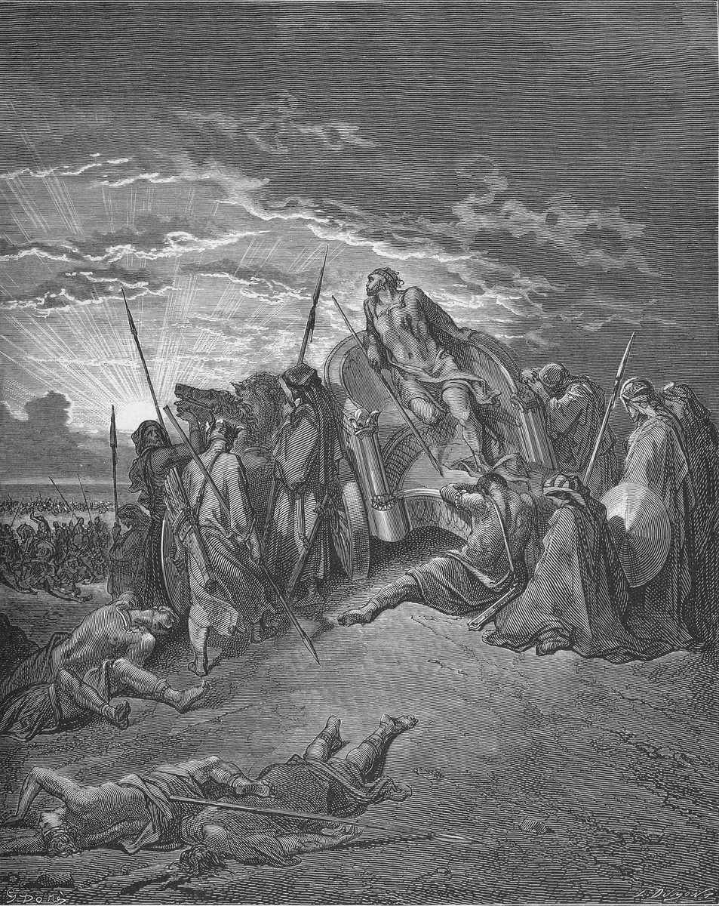

1 Kings 22 — The Mister Translation

1 Kings 22:35–36. The low sun is the verse’s. The Hebrew has him held standing, facing Aram, in a coat of mail; Doré has him seated, bare-chested, with mourners the verse does not mention.

Translator's Notes — verse by verse
“And they sat three years”. The verb is the plain one for sitting or staying, and it does not say who “they” are. The ASV has “they continued”, the NWT 1984 “continued dwelling”, and the Douay “there passed three years”. The chapter begins with sitting, and more is coming: two kings on their thrones at verse 10, and Jehovah on his at verse 19. The three years count from the covenant of 1 Kings 20:34 (now on these pages). The Hebrew puts Naboth’s vineyard between that covenant and this verse; the Greek, which has the two chapters the other way round, goes straight from the one to the other.
⭐ “Ramoth-gilead is ours”. Ben-hadad had promised, “The cities that my father took from your father I will return”, and he was let go on that word (20:34). The Hebrew does not say that Ramoth-gilead was one of those cities. Josephus does: he says it first belonged to Ahab’s father and that Ben-hadad’s father took it (Antiquities 8.399, Niese’s Greek, numbered 8.15.3 in Whiston). It was a city of refuge (Deuteronomy 4:43) and the seat of one of Solomon’s officers (1 Kings 4:13, both now on these pages). “Keeping still” is a word for silence. The ASV has “we are still”, the NWT 1984 “we are hesitating”, and the NIV “we are doing nothing”.
“I am as you are”. Three pairs and no verb. Jehoshaphat will say it again, word for word, to Ahab’s son at 2 Kings 3:7. The TLB has “You and I are brothers”, and there are no brothers in the verse. Chronicles gives a reason this verse does not: he had made a marriage alliance with Ahab (2 Chronicles 18:1).
“Inquire, please, today”. Jehoshaphat has already said yes, and now he asks. The word is kayyom, “as the day”. The KJV has “to day” and the Douay “this day”. The ASV has “Inquire first”, and the NWT 1984 “first of all”, which is a reading of the word and also of the situation.
⭐ “And the Lord will give”. The four hundred say Adonai, “the Lord”, and not the name. They will say the name at verse 12, and Micaiah will say it at verse 15. The ASV, which prints “Jehovah” at verses 5, 7 and 12, has “for the Lord will deliver it” here, and that is the Hebrew. The NWT 1984 prints “Jehovah will give it”, and its Reference edition lists the place in a footnote among 134 scribal changes from the divine name to Adonai; that is its claim, and the Hebrew printed here has Adonai. Chronicles has “God” (2 Chronicles 18:5). Whether the word is a scribe’s or the prophets’ own, the verse does not say.
⚠ “Will give into the hand of the king”. Give what? The Hebrew has no object, here or at verses 12 and 15. All seven shelf versions supply “it”, and the sentence reads as a promise of the city. It also does not say which king. The Greek closes the gap at verse 12, “into your hands, and the king of Syria”. As the Hebrew stands, the oracle can come true in more ways than the man who asked it will think of, and that is why this page leaves it bare.
“Is there not here a prophet of Jehovah still?” Four hundred men have spoken, and Jehoshaphat asks for another. Elijah said, “I have been left a prophet of Jehovah, I alone” (1 Kings 18:22, now on these pages), and here is the king who knows of one more. The TLB calls them “400 heathen prophets”. “Heathen” is not in the verse, and they speak in the name of Jehovah at verses 11–12. The number is also the number of the prophets of the Asherah at 18:19, and the text does not connect the two.
⭐ “And I hate him”. The king gives his reason, and it is not that Micaiah is wrong. The Hebrew holds the name back to the end of the sentence, and the KJV moves it up: “There is yet one man, Micaiah the son of Imlah”. Micaiah is Mikhayehu, “Who is like Jehovah?”, the full form of the name of Micah (see verse 28). Jehoshaphat’s name means “Jehovah has judged”. Josephus has Micaiah already under guard at this point, and makes him the prophet with the bandage in 1 Kings 20 (Antiquities 8.389, 8.403, numbered 8.14.5 and 8.15.4 in Whiston). The Hebrew does not name that prophet.
“A certain official”. Saris: the KJV has “an officer”, the NIV “one of his officials”, and the Geneva and the Douay “an eunuch”, the word’s narrower sense. The order is one word and a name. The KJV has “Hasten hither”, and it is that abrupt.
“At a threshing floor at the entrance of the gate”. The word is goren. The NWT 1984 and the NIV have “threshing floor”, the KJV “a void place”, the ASV “an open place”, and the Douay “a court”. It is level open ground, the sort a crowd can stand on, and it is also where the grain is parted from the chaff, which is the business of the morning. The Greek has neither the floor nor the robes: the kings sit “armed, in the gates of Samaria”.
⭐ “Horns of iron” and “gore”. A prophet acts out his word, and qeren is the old sign of a king’s strength. The verb is naggach, which is the verb of Moses’ blessing on Joseph, the tribes of the north: “with them he shall gore the peoples” (Deuteronomy 33:17, now on these pages). Zedekiah has reached for an old promise and cast it in metal. The NIV has “gore”; the ASV has “push the Syrians”, the NWT 1984 “you will push”, and the TLB “push the Syrians around”, which is a bully’s word. “Thus says Jehovah” is the formula Elijah used in the last chapter, and nothing in the words themselves tells the two speakers apart. This Zedekiah is not the last king of Judah, who has the same name.
“Go up … and prosper”. It is an order: hatslach, “succeed”. The NWT 1984 has “prove successful”, and the NIV “be victorious”. “Go up” will be the chapter’s verb: the prophets say it, and Jehovah says it at verse 20, “so that he goes up and falls”.
“With one mouth”. The phrase stands in three verses of the Hebrew Bible: this one, its copy in Chronicles, and Joshua 9:2 (now on these pages). The KJV keeps “with one mouth”, the Geneva has “with one accord”, the NIV “without exception”, and the NWT 1984 “unanimously”. The mouth is worth keeping, because it comes back at verse 22. The messenger means it as advice. “Your word” is what is read; the Hebrew writes “your words” (ketiv and qere).
“What Jehovah says to me, that I will speak”. Balaam said nearly this (Numbers 24:13, now on these pages), with the same last word.
⭐ “Go up and prosper”. Having sworn that, Micaiah comes in and says what the four hundred said, with only the name of the city left out. The king has changed “Shall I go?” to “Shall we go?”, and he gets the same answer. Nothing in the Hebrew marks a tone of voice. The TLB adds one, “Why, of course!”, and many readers hear the same thing in the king’s reply. The verse does not say, and the king does not need it to.
“How many times must I make you swear”. The Douay has “I adjure thee again and again”. The man who hates the answer is the one who demands it, and that tells the reader how often this has happened. He has four hundred yeses, and he knows what they are worth.
⭐ “Like sheep that have no shepherd”. The whole phrase stands in two verses of the Hebrew Bible: here and in Moses’ request for a leader, “so that the congregation of Jehovah will not be like sheep that have no shepherd” (Numbers 27:17, now on these pages). Mark and Matthew use the words of the crowds around Jesus (Mark 6:34; Matthew 9:36, both now on these pages). Here the shepherd is a king, and the prophet has told him he is dead without using the word. The TLB says it for him: “Their king is dead”.
“These have no masters”. The Hebrew is plural, adonim, and the NWT 1984 has “These have no masters”. The ASV has “These have no master”, and the NIV “These people have no master”, and the plural can indeed mean one lord. “Let them return … in peace” is mercy for the army, and it is a sentence on one man: he is the one who will not go home in peace, and at verse 27 he promises himself exactly that. Josephus states it outright, that the rest will return and he alone will fall (Antiquities 8.405, numbered 8.15.4 in Whiston).
⭐ “I saw Jehovah sitting on his throne”. The words are those of verse 10. Two kings sit at the gate of Samaria with their prophets before them, and Micaiah has seen the other throne, with its own company standing by. Isaiah saw a throne and its company too (Isaiah 6:1), and Job’s opening has such a court (Job 1:6, now on these pages). “The host of heaven”, with tsava, is the ASV’s “host of heaven”, the Douay’s “army of heaven”, the NWT 1984’s “army of the heavens”, and the NIV’s “multitudes of heaven”. It is the phrase for what Israel must not bow to (Deuteronomy 4:19, now on these pages), here standing in attendance.
⭐ “Who will entice Ahab?” The name stands in six verses of this chapter, and five of them are in the closing records from verse 39 on. In the story itself, verses 1 to 38, he is “the king of Israel” or “the king”, to the narrator, to Jehoshaphat, to the messenger and to everyone else. One speaker calls him Ahab, and it is Jehovah. The TLB supplies the name all through the story, and that loses it. The verb is patah, which is the seducer’s verb in the law, and Jeremiah’s accusation, “You enticed me, Jehovah” (Jeremiah 20:7, now on these pages), and “I, Jehovah, have enticed that prophet” in Ezekiel 14:9. The ASV has “entice”, the KJV “persuade”, the Douay “deceive”, and the NWT 1984 “fool”.
⚠ “And the spirit came out”. The Hebrew has the article: not “a spirit” but “the spirit”. The ASV, the KJV, the NIV and the NWT 1984 all have “a spirit”, and the TLB has “one angel”, a word the verse does not use. The Hebrew may mean only “the spirit in question”, but a tradition took it to mean someone in particular. Rabbi Yochanan says in the Talmud that it was the spirit of Naboth the Jezreelite, and “Go out” is explained there as “Go out from my presence” (Sanhedrin 89a; Shabbat 149b). Rashi repeats it. It is a reading, and the verse names no one. On that reading the last chapter’s victim is the one who steps forward.
⚠ “A spirit of falsehood”. The phrase stands in four verses of the Hebrew Bible, all of them this scene: verses 22 and 23 and their copies in Chronicles. Sheqer is the word for a false witness. The KJV has “a lying spirit”, the Geneva “a false spirit”, the NIV “a deceiving spirit”, and the NWT 1984 “a deceptive spirit”. The Hebrew says plainly that Jehovah sent it and that Jehovah “has put” it. Readers have taken this in different ways. Some take it as it stands, a deceit sent as judgment on a man who has refused the truth, and compare Ezekiel 14:9 and “God sends them a working of error” (2 Thessalonians 2:11, now on these pages). Some take it as permission, as in Job. The Talmud sends the spirit out of God’s presence, and gives as a possible reason “he who speaks lies shall not stand before my eyes” (Shabbat 149b, quoting Psalm 101:7). This page does not choose. It notes one thing the verses do show: the plan is read out to the man it is meant to deceive. Ahab hears how he is being deceived, from a prophet of Jehovah, in front of witnesses, and he goes up anyway.
“You will also prevail”. It is the verb of Jeremiah 20:7 again, “you prevailed”. “Has spoken evil against you” picks up the evil of 1 Kings 21:29 (now on these pages), which was put off to the son’s days. The ASV has “spoken evil concerning thee”, and the NIV “decreed disaster”. What was put off was the house. The man’s own sentence stood.
“Which way did the spirit of Jehovah pass from me?” Zedekiah takes it for granted that there is one spirit and that he has it. The ASV has “Which way went the Spirit of Jehovah”, with a capital; the NWT 1984 has “the spirit of Jehovah”. The Geneva has “When went the spirit”, the TLB “When did the Spirit”, and the Douay “Hath then the spirit”, and none of the three has the Hebrew’s “which way”. Josephus gives Zedekiah a whole argument here that the Hebrew does not have: Elijah, the better prophet, said the dogs would lick Ahab’s blood in Naboth’s field at Jezreel, so a man who sends Ahab to die three days away at Ramoth must be lying; and if this one is a true prophet, let him wither the hand that strikes him, as was done to Jeroboam (Antiquities 8.407–408, numbered 8.15.4 in Whiston).
“Chamber within chamber”. These are the words for Ben-hadad’s hiding place in Aphek (1 Kings 20:30, now on these pages), and see cheder. The Douay keeps them, “a chamber within a chamber”; the ASV has “an inner chamber”, the NIV “an inner room”, the NWT 1984 “the innermost chamber”, and the Geneva “from chamber to chamber”. Micaiah’s answer to “which way?” is that he will know the day he has to run. The text never says what became of Zedekiah.
“Turn him back to Amon … and to Joash the king’s son”. “Turn him back” may mean that he came from custody, and Josephus says so. “The chief of the city” is a post. Joash may be a son of Ahab or an officer with a royal title, and readers differ. The TLB has “my son Joash”, and the Hebrew has no “my”. The Douay has “the son of Amalech”, as the Latin does.
“Bread of oppression and water of oppression”. The word is lachats, the squeezing that Jehovah saw in Egypt. Isaiah has “water of oppression” too (Isaiah 30:20). The ASV has “bread of affliction”, the Douay “water of distress”, the NIV “nothing but bread and water”, and the NWT 1984 “a reduced allowance of bread”. “This one” is curt, and the ASV has “this fellow”. Beit ha-kele is “the house of confinement”, the NWT 1984’s “house of detention”. “Until I come in peace” takes up the word of verse 17, and the king is the one who says it.
⭐ “If you return at all in peace”. Micaiah stakes his name on the test of the law: “the thing does not happen”, and “that is the word Jehovah has not spoken” (Deuteronomy 18:22, now on these pages).
⚠ “Hear, all you peoples”. These three Hebrew words stand in three verses of the Hebrew Bible: here, in the copy at 2 Chronicles 18:27, and as the opening of the prophet Micah’s first oracle (Micah 1:2, now on these pages). This page renders them the same in both places. The two prophets have one name, more than a century apart, and the line is hard to make sense of here, where no “peoples” are present. The Greek does not have it. Many readers take it as an early note by someone who identified the two men; others simply as Micaiah’s own call to witness. The ASV has “Hear, ye peoples, all of you”, the KJV “Hearken, O people”, and the NIV “Mark my words, all you people!”.
⭐ “I will disguise myself”. The verb is the one for Saul going to the medium (1 Samuel 28:8) and for the prophet with the bandage who caught this same king (1 Kings 20:38, both now on these pages), and see chapas. It will be the verb for Josiah going down to Megiddo, where he too is shot in his chariot (2 Chronicles 35:22). The Hebrew of the king’s speech is two bare infinitives, “to disguise and to go”, and the NWT 1984 tries to keep them: “There will be a disguising”. The Geneva has “change mine apparel”, and the Douay “Take armour”, from the Latin. He has been told he will die, and he tries to get out from under the word by changing his clothes. Josephus says so: they were outwitting what Micaiah had foretold (Antiquities 8.412, numbered 8.15.5 in Whiston). His ally is told to go into battle dressed as the target. The Greek makes it worse, “put on my robes”, and the Hebrew has “your robes”.
“The thirty-two commanders”. The number is that of the kings who came with Ben-hadad (1 Kings 20:1), who were replaced with governors at 20:24 (both now on these pages). The ASV has “captains of his chariots”, the NIV “chariot commanders”, and the NWT 1984 “chiefs of the chariots”. The Hebrew never names the king of Aram in this chapter; Josephus calls him Adados. If he is the man Ahab spared, then the man who was sent away with a covenant has given one order, and it is “the king of Israel alone”. A prophet said this would happen: “your soul will be in place of his soul” (20:42).
⚠ “And Jehoshaphat cried out”. The Hebrew stops there, and the next verse has the chariots turn back because they saw. It does not say why he cried, or to whom. The NWT 1984 has “cry for aid”, and the TLB “shouted out to identify himself”, which are both guesses. Chronicles supplies an answer: “and Jehovah helped him” (2 Chronicles 18:31).
⭐ “In his innocence”. The word is letummo, from tom. It is the noun of Absalom’s two hundred, who went “in their integrity; and they knew nothing” (2 Samuel 15:11, now on these pages), and the two places have the same sense: he did not know what he was doing. This page has “integrity” there and “innocence” here, because an English reader would otherwise take the archer to be a man of principle. The NWT 1984 has “in his innocence”. The ASV has “at a venture”, the NIV “at random”, and the Geneva “mightily”. The Greek has the opposite, eustochōs, “with a good aim”. Tradition did not leave him nameless: Josephus calls him Amanos, a royal page of the king of Aram (Antiquities 8.414, numbered 8.15.5 in Whiston), and Rashi says he was Naaman. In the Hebrew he is “a man”. A king dressed to avoid being aimed at is hit by someone who was not aiming.
“Between the joints and the coat of mail”. Shiryan is this verse’s spelling of shiryon, Goliath’s word (1 Samuel 17:5, now on these pages). “The joints” is uncertain; the word comes from the verb “to cling”. The KJV has “the joints of the harness”, the ASV “the joints of the armor”, the Geneva “his brigandine”, and the NWT 1984 “the appendages”. The Douay has “between the lungs and the stomach”, from the Latin, and the Greek also has the lung. “Turn your hand” is what a charioteer does with the reins. “I am wounded” is literally “I have been made sick”: Josiah’s last words have the same verb (2 Chronicles 35:23), and it is the word of Micah 6:13 (now on these pages), “made you sick by striking you”. The ASV has “sore wounded”.
⭐ “And the war went up”. “Go up” was said at verses 6, 12 and 15, and Jehovah asked at verse 20 who would make him go up. Now the battle does it. The KJV has “increased”, and the NWT 1984 “rising in intensity”. “Held standing” is one word in Hebrew: someone held him there. The ASV has “stayed up”, the NIV “propped up”, the NWT 1984 “kept in a standing position”, and the Geneva “stood still”. The man who went into battle disguised, and who asked at verse 34 to be taken out, spends the day on show, facing the enemy. “The bosom of the chariot” is the word for a lap: the KJV has “the midst of the chariot”, the ASV “the bottom of the chariot”, and the NIV “the floor of the chariot”.
“And the cry passed through the camp”. Rinnah is a ringing cry, often of joy. The NWT 1984 has “the ringing cry”, the ASV “a cry”, and the KJV “a proclamation” The Greek has a herald, and so does Josephus. “Each man to his city” pays verse 17 to the letter: without a leader, and each man going home.
⭐ “And he came to Samaria”. The Hebrew says “And the king died, and he came”. The dead man is the subject. The ASV, the NIV and the NWT 1984 have “was brought”, the sense it must have, and the Greek has “they came”. But it is the verb of verse 27, “until I come in peace”, and he came. He came to Samaria “sullen and raging” at 20:43 too.
⚠ “According to the word of Jehovah”: Samaria or Jezreel? Elijah said, “In the place where the dogs licked the blood of Naboth” (1 Kings 21:19, now on these pages), and Naboth died at Jezreel. This is Samaria, and the verse says it fulfils the word anyway. Readers have noticed for a long time. Rashi says Naboth must have been killed here. Radak has the water of Samaria’s pool run down red to Jezreel. Josephus simply moves the washing to “the spring of Jezreel” (Antiquities 8.417, numbered 8.15.6 in Whiston). Others point to 21:29, which moved the evil to the son, and to 2 Kings 9:25–26. The Greek adds swine to the dogs.
⭐ “And the prostitutes bathed”: or was it the armour? The Hebrew has hazzonot, the plural of zonah, and says only that they “bathed”. The ASV has “the harlots washed themselves there”, the NWT 1984 “the prostitutes themselves bathed there”, and the NIV “where the prostitutes bathed”. The Greek goes further, “washed in the blood”, and Josephus has them go on bathing in that spring from then on. But the Aramaic Targum has “and the weapons they washed”, from a word for arms that sounds like this one, and Rashi and Radak report it. That is where the KJV gets “they washed his armour” and the Geneva “they washed his armor”. The Douay has “they washed the reins”, from the Latin, and the TLB takes both, “chariot and armor” and “where the prostitutes bathed”. Rabbi Elazar in the Talmud read a third thing, chezyonot, “visions”: two of them washed clean, Micaiah’s and Elijah’s (Sanhedrin 39b). The letters on the page spell prostitutes, and this page has that.
⭐ “The house of ivory”. “The house of ivory” stands in one verse of the Hebrew Bible, and the story of the vineyard shows what kind of neighbour it had. Shen is the word for a tooth. Amos has “the houses of ivory” perishing (Amos 3:15). The ASV has “the ivory house”, the NWT 1984 “the house of ivory”, and the TLB “the ivory palace”. The NIV has “adorned with ivory”, which is what such a phrase must mean in practice, since a house is not built of tusks. Samaria has given up carved ivories to the excavators.
⚠ “And Ahab lay down with his fathers”. It is the same formula as for a king who dies in bed, used of a man shot in his chariot at verse 35. The KJV has “slept with his fathers”, the NWT 1984 “lay down with his forefathers”, and the NIV “rested with his ancestors”; the TLB has “buried among his ancestors”, which the verse does not say, though verse 37 buried him in the city where his father lay (1 Kings 16:28, now on these pages). 2 Kings 1:1 (now on these pages) opens by dating the next thing from it: “after the death of Ahab”.
⚠ The verse numbers. This page numbers the chapter as the Hebrew does, with 54 verses. Most English Bibles have 53: they join Hebrew verses 43 and 44 into one verse 43, so that from there on their numbers are one lower. Verse 49 here is their 48. The Douay keeps the Hebrew count, and its verse 44 is “Nevertheless he took not away the high places”.
⚠ A notice out of its place, and the dates. Jehoshaphat has been in the story since verse 2, and his record comes only now, after the death of the king he went to war with. The Greek has moved things: it gives the whole notice after Omri, at 16:28a–h, and repeats most of it here, without verses 47–50. Its dates are different too. Here the Hebrew makes him king in Ahab’s fourth year, so Ahab’s twenty-second and last year falls in Jehoshaphat’s eighteenth or nineteenth, depending on how a first year is counted, and verse 52 has Ahaziah begin in the seventeenth. The Greek has Ahab begin in Jehoshaphat’s second year (16:29). 2 Kings 1:17 (now on these pages) has another reckoning again. Readers propose overlapping reigns, and the numbers do not settle it.
“Only, the high places were not removed”. It is what was said of Asa (1 Kings 15:14, now on these pages). Chronicles says both things of Jehoshaphat, that he took them away and that they were not removed (2 Chronicles 17:6; 20:33).
“Made peace with the king of Israel”. The text does not comment. Chronicles does: a seer asks him, “Should you help the wicked?” (2 Chronicles 19:2).
⚠ “The rest of the consecrated men”. This is qadesh, as at 1 Kings 14:24 and 15:12 (both now on these pages). The word says what he was set apart for, and the dictionary entry explains why the old rendering is a problem. The KJV has “the sodomites”, the Geneva “the Sodomites”, the NIV “male shrine prostitutes”, the NWT 1984 “male temple prostitutes”, the Douay “the effeminate”, and the TLB “houses of male prostitution”. No two agree. “He burned out” is bi’er, the verb of 21:21, used for removal and not for a fire; the NWT 1984 has “cleared out”. Asa had already put them out, and some remained.
⭐ “There was no king in Edom; an officer was king”. Nitsav is the word for Solomon’s officers (1 Kings 4:5, now on these pages), and the short verse may explain the next one: with no king in Edom, the road to the Red Sea may have been open to Judah. The KJV has “a deputy was king”, and the NIV “a provincial governor”. The Greek, at 16:28e, copies the word as nasib and says “no king in Syria”, since Edom and Aram differ by one letter in Hebrew. Edom will have a king at 2 Kings 3:9 and make one at 8:20.
⭐ “Ships of Tarshish to go to Ophir”. Same port, same gold, same plan as Solomon (1 Kings 9:26–28; 10:22, both now on these pages), and it gets as far as the harbour. “Of Tarshish” seems to be a kind of ship here, since these sail from the Red Sea. The NIV has “trading ships”, the TLB “great freighters”, and the Douay “navies on the sea”. The Hebrew writes “ten” for “made” and a singular for “were broken”, and both are read otherwise (ketiv and qere). Chronicles tells a different story: Jehoshaphat did join with Ahaziah, a prophet condemned it, and the wreck was the judgment (2 Chronicles 20:35–37). Here the wreck comes first, and Jehoshaphat says no.
“Jehoram his son”. Israel will have a Jehoram too, Ahab’s son, and the two reign at the same time, as 2 Kings 1:17 shows.
“In the way of his father and in the way of his mother”. The phrase “and in the way of his mother” stands in one verse of the Hebrew Bible. She is not named, and does not need to be. The Greek names both, Ahab and Jezebel. The NIV has “his father and mother”. Three ways, and the third is Jeroboam’s, the book’s usual measure for a king of Israel. The last verse has served Baal and bowed down to him, the words used of Ahab himself (1 Kings 16:31, now on these pages).
⭐ “According to all that his father had done”. Those are the last words of 1 Kings, and they are not an ending. Elijah is alive, Ahaziah has just begun, Jezebel is on her feet, and the sentence of 21:29 is still waiting. In Hebrew Kings is one book, and the division falls in the middle of a reign. 2 Kings 1:1 goes straight on.
Patterns worth carrying forward
Where this translation keeps the words exact and distinct: “the Lord” at verse 6, where the Hebrew has Adonai, and “Jehovah” at verses 12 and 15; “will give into the hand of the king”, with no object, as the Hebrew has it; “gore”, as in Deuteronomy 33:17; “prosper”; “with one mouth”; “masters”, in the plural; “the host of heaven”; “entice”; “the spirit”, with the article; “a spirit of falsehood”; “chamber within chamber”, as at 20:30; “bread of oppression and water of oppression”; “Hear, all you peoples”, as at Micah 1:2; “disguised”, as at 20:38; “in his innocence”; “the war went up”; “the bosom of the chariot”; “and he came to Samaria”; “the prostitutes”; “the consecrated men”, as at 14:24; “burned out”; and “an officer”, as at 4:5. The verse numbers are the Hebrew’s. The written and read Hebrew are recorded at verses 13 and 49.
Echoes paid. The covenant and the cities (1 Kings 20:34); “chamber within chamber” (1 Kings 20:30); the disguised prophet (1 Kings 20:38); the thirty-two (1 Kings 20:1, 24); “your soul in place of his soul” (1 Kings 20:42); “sullen and raging”, and Samaria (1 Kings 20:43); the dogs and the blood (1 Kings 21:19); the evil put off (1 Kings 21:29); “I am left” (1 Kings 18:22); four hundred (1 Kings 18:19); the blessing of Joseph (Deuteronomy 33:17); Balaam’s “that I will speak” (Numbers 24:13); sheep with no shepherd (Numbers 27:17); the test of a prophet (Deuteronomy 18:22); “in their integrity” (2 Samuel 15:11); Saul’s disguise (1 Samuel 28:8); Goliath’s coat (1 Samuel 17:5); Solomon’s officers, his port and his gold (1 Kings 4:5; 9:26–28; 10:22); and the high places and the consecrated men of Asa (1 Kings 15:12, 14).
Echoes planted. The parallel account (2 Chronicles 18); “I am as you are” again (2 Kings 3:7); Josiah’s disguise and his wound (2 Chronicles 35:22–23); the plot of Naboth (2 Kings 9:25–26); the houses of ivory (Amos 3:15); and the ships and the prophet Eliezer (2 Chronicles 20:35–37). None of these is translated here yet.
1 Kings ends here. The story continues in 2 Kings 1 (now on these pages), where Moab rebels after the death of Ahab, and Ahaziah falls through the lattice of his upper room in Samaria.